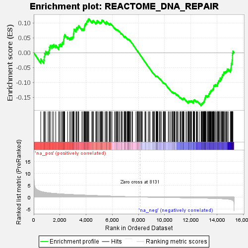
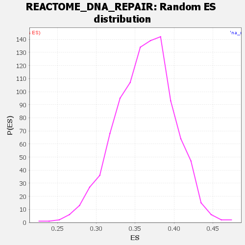

| Dataset | DGErankName |
| Phenotype | NoPhenotypeAvailable |
| Upregulated in class | na_neg |
| GeneSet | REACTOME_DNA_REPAIR |
| Enrichment Score (ES) | -0.17785214 |
| Normalized Enrichment Score (NES) | NaN |
| Nominal p-value | NaN |
| FDR q-value | 1.0 |
| FWER p-Value | 0.0 |

| SYMBOL | RANK IN GENE LIST | RANK METRIC SCORE | RUNNING ES | CORE ENRICHMENT | |
|---|---|---|---|---|---|
| 1 | NEIL1 | 535 | 2.359 | -0.0208 | No |
| 2 | H2BC21 | 764 | 2.056 | -0.0230 | No |
| 3 | DCLRE1A | 807 | 2.010 | -0.0131 | No |
| 4 | MUTYH | 828 | 1.987 | -0.0019 | No |
| 5 | TP53 | 911 | 1.914 | 0.0047 | No |
| 6 | UBA7 | 1093 | 1.771 | 0.0038 | No |
| 7 | CETN2 | 1181 | 1.703 | 0.0088 | No |
| 8 | KDM4A | 1197 | 1.696 | 0.0185 | No |
| 9 | RAD23B | 1264 | 1.658 | 0.0246 | No |
| 10 | ERCC3 | 1410 | 1.583 | 0.0249 | No |
| 11 | PARP2 | 1519 | 1.530 | 0.0274 | No |
| 12 | H2AJ | 1684 | 1.460 | 0.0256 | No |
| 13 | TRIM25 | 1921 | 1.369 | 0.0186 | No |
| 14 | XRCC2 | 1932 | 1.363 | 0.0265 | No |
| 15 | FAN1 | 2020 | 1.319 | 0.0290 | No |
| 16 | GTF2H5 | 2143 | 1.271 | 0.0289 | No |
| 17 | BRCC3 | 2187 | 1.258 | 0.0340 | No |
| 18 | SUMO1 | 2261 | 1.235 | 0.0369 | No |
| 19 | MPG | 2284 | 1.224 | 0.0432 | No |
| 20 | USP10 | 2309 | 1.218 | 0.0493 | No |
| 21 | MSH3 | 2326 | 1.212 | 0.0559 | No |
| 22 | FANCC | 2369 | 1.200 | 0.0606 | No |
| 23 | POLE4 | 2591 | 1.133 | 0.0531 | No |
| 24 | POLM | 2750 | 1.087 | 0.0494 | No |
| 25 | PIAS3 | 2833 | 1.060 | 0.0506 | No |
| 26 | REV3L | 2922 | 1.034 | 0.0513 | No |
| 27 | TERF2IP | 2986 | 1.017 | 0.0535 | No |
| 28 | DCLRE1C | 3026 | 1.003 | 0.0572 | No |
| 29 | ERCC6 | 3031 | 1.001 | 0.0633 | No |
| 30 | UVSSA | 3063 | 0.992 | 0.0675 | No |
| 31 | COPS7A | 3070 | 0.992 | 0.0734 | No |
| 32 | SUMO3 | 3085 | 0.988 | 0.0787 | No |
| 33 | MBD4 | 3224 | 0.956 | 0.0755 | No |
| 34 | INO80D | 3246 | 0.950 | 0.0801 | No |
| 35 | RAD50 | 3275 | 0.940 | 0.0842 | No |
| 36 | BAZ1B | 3370 | 0.918 | 0.0837 | No |
| 37 | FIGNL1 | 3401 | 0.912 | 0.0875 | No |
| 38 | PMS2 | 3441 | 0.902 | 0.0906 | No |
| 39 | UBE2L6 | 3674 | 0.846 | 0.0804 | No |
| 40 | H2AC8 | 3757 | 0.828 | 0.0802 | No |
| 41 | WRN | 3842 | 0.811 | 0.0797 | No |
| 42 | FTO | 3860 | 0.806 | 0.0837 | No |
| 43 | RPS27A | 3871 | 0.805 | 0.0881 | No |
| 44 | EME2 | 3898 | 0.796 | 0.0914 | No |
| 45 | USP45 | 3924 | 0.790 | 0.0947 | No |
| 46 | PPP4R2 | 3952 | 0.783 | 0.0978 | No |
| 47 | ERCC5 | 4004 | 0.773 | 0.0993 | No |
| 48 | POLR2B | 4054 | 0.761 | 0.1008 | No |
| 49 | RPA1 | 4058 | 0.760 | 0.1054 | No |
| 50 | LIG4 | 4101 | 0.749 | 0.1074 | No |
| 51 | APEX1 | 4153 | 0.737 | 0.1086 | No |
| 52 | RNF111 | 4166 | 0.734 | 0.1125 | No |
| 53 | GTF2H3 | 4214 | 0.723 | 0.1139 | No |
| 54 | PAXIP1 | 4428 | 0.678 | 0.1040 | No |
| 55 | UBE2V2 | 4492 | 0.663 | 0.1040 | No |
| 56 | H2BC4 | 4506 | 0.661 | 0.1073 | No |
| 57 | KDM4B | 4568 | 0.643 | 0.1073 | No |
| 58 | YY1 | 4738 | 0.607 | 0.0998 | No |
| 59 | NEIL2 | 4766 | 0.602 | 0.1018 | No |
| 60 | USP43 | 4821 | 0.591 | 0.1019 | No |
| 61 | PRPF19 | 4835 | 0.588 | 0.1048 | No |
| 62 | RFC1 | 4845 | 0.586 | 0.1079 | No |
| 63 | HERC2 | 4952 | 0.562 | 0.1044 | No |
| 64 | TERF2 | 5043 | 0.536 | 0.1018 | No |
| 65 | ATM | 5097 | 0.524 | 0.1015 | No |
| 66 | ERCC4 | 5147 | 0.515 | 0.1015 | No |
| 67 | MRE11 | 5179 | 0.506 | 0.1027 | No |
| 68 | ABL1 | 5190 | 0.504 | 0.1052 | No |
| 69 | FANCE | 5207 | 0.500 | 0.1073 | No |
| 70 | VCP | 5221 | 0.498 | 0.1095 | No |
| 71 | ISY1 | 5285 | 0.484 | 0.1084 | No |
| 72 | H2BC8 | 5446 | 0.453 | 0.1006 | No |
| 73 | PPIE | 5532 | 0.434 | 0.0977 | No |
| 74 | MAPK8 | 5533 | 0.434 | 0.1004 | No |
| 75 | PRKDC | 5558 | 0.427 | 0.1015 | No |
| 76 | SMUG1 | 5560 | 0.427 | 0.1041 | No |
| 77 | FANCF | 5657 | 0.411 | 0.1003 | No |
| 78 | PNKP | 5776 | 0.386 | 0.0949 | No |
| 79 | GEN1 | 5797 | 0.383 | 0.0960 | No |
| 80 | ERCC8 | 5825 | 0.377 | 0.0965 | No |
| 81 | ATR | 5833 | 0.376 | 0.0985 | No |
| 82 | CHEK2 | 5905 | 0.358 | 0.0960 | No |
| 83 | H2BC7 | 5984 | 0.341 | 0.0929 | No |
| 84 | POLR2H | 6174 | 0.300 | 0.0822 | No |
| 85 | ZNF830 | 6228 | 0.290 | 0.0805 | No |
| 86 | ADPRS | 6308 | 0.273 | 0.0770 | No |
| 87 | H4C9 | 6324 | 0.271 | 0.0777 | No |
| 88 | INO80B | 6360 | 0.265 | 0.0770 | No |
| 89 | BRCA2 | 6396 | 0.257 | 0.0763 | No |
| 90 | PARG | 6413 | 0.254 | 0.0768 | No |
| 91 | CUL4B | 6503 | 0.237 | 0.0724 | No |
| 92 | MSH2 | 6553 | 0.228 | 0.0706 | No |
| 93 | RBBP8 | 6675 | 0.208 | 0.0638 | No |
| 94 | INO80 | 6681 | 0.208 | 0.0648 | No |
| 95 | UBXN1 | 6703 | 0.205 | 0.0647 | No |
| 96 | POLR2A | 6768 | 0.197 | 0.0617 | No |
| 97 | TP53BP1 | 6896 | 0.175 | 0.0543 | No |
| 98 | NHEJ1 | 6938 | 0.168 | 0.0526 | No |
| 99 | H2BC12 | 6960 | 0.164 | 0.0523 | No |
| 100 | UBA52 | 6965 | 0.163 | 0.0530 | No |
| 101 | POT1 | 6978 | 0.160 | 0.0532 | No |
| 102 | FANCL | 6981 | 0.159 | 0.0541 | No |
| 103 | POLR2D | 7026 | 0.150 | 0.0521 | No |
| 104 | NEIL3 | 7109 | 0.135 | 0.0475 | No |
| 105 | H2BC17 | 7163 | 0.127 | 0.0448 | No |
| 106 | PALB2 | 7169 | 0.126 | 0.0452 | No |
| 107 | H2AC14 | 7175 | 0.125 | 0.0457 | No |
| 108 | TDG | 7186 | 0.124 | 0.0458 | No |
| 109 | RCHY1 | 7211 | 0.120 | 0.0450 | No |
| 110 | POLR2L | 7243 | 0.116 | 0.0436 | No |
| 111 | CCNH | 7244 | 0.116 | 0.0444 | No |
| 112 | H2BC14 | 7253 | 0.115 | 0.0446 | No |
| 113 | H2BC13 | 7277 | 0.111 | 0.0437 | No |
| 114 | CUL4A | 7302 | 0.107 | 0.0428 | No |
| 115 | XPC | 7351 | 0.100 | 0.0402 | No |
| 116 | POLE2 | 7354 | 0.100 | 0.0407 | No |
| 117 | FAAP100 | 7425 | 0.089 | 0.0366 | No |
| 118 | ERCC1 | 7520 | 0.077 | 0.0308 | No |
| 119 | FANCB | 7546 | 0.074 | 0.0296 | No |
| 120 | COPS2 | 7808 | 0.039 | 0.0125 | No |
| 121 | TDP2 | 7905 | 0.027 | 0.0062 | No |
| 122 | CHEK1 | 7909 | 0.027 | 0.0062 | No |
| 123 | H2BC9 | 7932 | 0.023 | 0.0049 | No |
| 124 | H2BC3 | 7938 | 0.022 | 0.0047 | No |
| 125 | XPA | 7998 | 0.015 | 0.0009 | No |
| 126 | POLR2K | 8012 | 0.013 | 0.0001 | No |
| 127 | TOPBP1 | 8034 | 0.011 | -0.0013 | No |
| 128 | MSH6 | 8088 | 0.005 | -0.0048 | No |
| 129 | REV1 | 8176 | -0.005 | -0.0105 | No |
| 130 | RAD9A | 8189 | -0.007 | -0.0113 | No |
| 131 | POLR2J | 8190 | -0.007 | -0.0112 | No |
| 132 | XRCC5 | 8197 | -0.007 | -0.0116 | No |
| 133 | FEN1 | 8244 | -0.013 | -0.0146 | No |
| 134 | RPA2 | 8314 | -0.019 | -0.0191 | No |
| 135 | DDB2 | 8487 | -0.041 | -0.0303 | No |
| 136 | MGMT | 8534 | -0.046 | -0.0331 | No |
| 137 | POLR2G | 8567 | -0.048 | -0.0349 | No |
| 138 | TIPIN | 8748 | -0.067 | -0.0465 | No |
| 139 | EME1 | 8820 | -0.076 | -0.0507 | No |
| 140 | COPS8 | 8883 | -0.085 | -0.0543 | No |
| 141 | H2BC1 | 9077 | -0.106 | -0.0665 | No |
| 142 | TFPT | 9125 | -0.110 | -0.0690 | No |
| 143 | FAAP20 | 9159 | -0.113 | -0.0705 | No |
| 144 | PCNA | 9204 | -0.117 | -0.0727 | No |
| 145 | RAD9B | 9219 | -0.119 | -0.0728 | No |
| 146 | FANCA | 9335 | -0.129 | -0.0797 | No |
| 147 | PPP5C | 9343 | -0.130 | -0.0793 | No |
| 148 | ACTB | 9348 | -0.130 | -0.0788 | No |
| 149 | H2BC15 | 9355 | -0.131 | -0.0784 | No |
| 150 | POLR2E | 9392 | -0.135 | -0.0799 | No |
| 151 | XRCC4 | 9397 | -0.135 | -0.0793 | No |
| 152 | SUMO2 | 9420 | -0.137 | -0.0799 | No |
| 153 | ASCC2 | 9424 | -0.138 | -0.0792 | No |
| 154 | BRIP1 | 9438 | -0.139 | -0.0792 | No |
| 155 | RAD51D | 9471 | -0.142 | -0.0805 | No |
| 156 | BABAM1 | 9482 | -0.142 | -0.0802 | No |
| 157 | MCRS1 | 9595 | -0.153 | -0.0868 | No |
| 158 | POLQ | 9602 | -0.153 | -0.0862 | No |
| 159 | POLK | 9667 | -0.160 | -0.0894 | No |
| 160 | BLM | 9670 | -0.160 | -0.0886 | No |
| 161 | CHD1L | 9757 | -0.167 | -0.0932 | No |
| 162 | PARP1 | 9896 | -0.177 | -0.1013 | No |
| 163 | TERF1 | 9903 | -0.178 | -0.1006 | No |
| 164 | H2BC11 | 9935 | -0.180 | -0.1015 | No |
| 165 | H2AC6 | 9955 | -0.182 | -0.1017 | No |
| 166 | DNA2 | 10005 | -0.185 | -0.1038 | No |
| 167 | XRCC3 | 10022 | -0.186 | -0.1037 | No |
| 168 | RBX1 | 10064 | -0.190 | -0.1052 | No |
| 169 | FANCD2 | 10274 | -0.204 | -0.1178 | No |
| 170 | PPP4C | 10343 | -0.210 | -0.1210 | No |
| 171 | SEM1 | 10441 | -0.218 | -0.1261 | No |
| 172 | FANCM | 10545 | -0.225 | -0.1316 | No |
| 173 | RIF1 | 10567 | -0.226 | -0.1316 | No |
| 174 | BARD1 | 10621 | -0.230 | -0.1336 | No |
| 175 | TDP1 | 10622 | -0.230 | -0.1322 | No |
| 176 | RPA3 | 10691 | -0.235 | -0.1352 | No |
| 177 | OGG1 | 10700 | -0.236 | -0.1343 | No |
| 178 | RAD51AP1 | 10745 | -0.239 | -0.1357 | No |
| 179 | GPS1 | 10757 | -0.240 | -0.1349 | No |
| 180 | POLE3 | 10774 | -0.241 | -0.1345 | No |
| 181 | NFRKB | 10875 | -0.249 | -0.1396 | No |
| 182 | DTL | 10887 | -0.250 | -0.1387 | No |
| 183 | RNF168 | 10959 | -0.255 | -0.1419 | No |
| 184 | RNF8 | 10976 | -0.256 | -0.1413 | No |
| 185 | H4C8 | 11029 | -0.260 | -0.1431 | No |
| 186 | FANCI | 11170 | -0.272 | -0.1508 | No |
| 187 | UBE2N | 11195 | -0.273 | -0.1506 | No |
| 188 | RAD51B | 11223 | -0.275 | -0.1507 | No |
| 189 | SPRTN | 11319 | -0.282 | -0.1553 | No |
| 190 | ELL | 11323 | -0.283 | -0.1537 | No |
| 191 | EYA1 | 11391 | -0.288 | -0.1563 | No |
| 192 | RAD1 | 11404 | -0.289 | -0.1553 | No |
| 193 | MDC1 | 11419 | -0.291 | -0.1544 | No |
| 194 | UNG | 11439 | -0.293 | -0.1538 | No |
| 195 | ASCC3 | 11441 | -0.293 | -0.1520 | No |
| 196 | POLI | 11477 | -0.295 | -0.1525 | No |
| 197 | BRCA1 | 11623 | -0.308 | -0.1602 | No |
| 198 | USP7 | 11697 | -0.314 | -0.1631 | No |
| 199 | H2AC4 | 11791 | -0.322 | -0.1673 | No |
| 200 | SIRT6 | 11794 | -0.322 | -0.1654 | No |
| 201 | PCLAF | 11808 | -0.323 | -0.1642 | No |
| 202 | H4C2 | 11842 | -0.326 | -0.1643 | No |
| 203 | UBE2B | 11847 | -0.327 | -0.1625 | No |
| 204 | UBE2T | 11860 | -0.328 | -0.1613 | No |
| 205 | GTF2H1 | 11928 | -0.334 | -0.1636 | No |
| 206 | CLSPN | 11950 | -0.335 | -0.1629 | No |
| 207 | TCEA1 | 11967 | -0.337 | -0.1619 | No |
| 208 | NBN | 12009 | -0.342 | -0.1624 | No |
| 209 | MLH1 | 12053 | -0.345 | -0.1631 | No |
| 210 | COPS3 | 12057 | -0.345 | -0.1611 | No |
| 211 | CDK2 | 12177 | -0.358 | -0.1668 | No |
| 212 | UFD1 | 12185 | -0.359 | -0.1650 | No |
| 213 | CCNA1 | 12186 | -0.359 | -0.1628 | No |
| 214 | BABAM2 | 12201 | -0.361 | -0.1614 | No |
| 215 | AQR | 12207 | -0.361 | -0.1595 | No |
| 216 | DDB1 | 12257 | -0.366 | -0.1604 | No |
| 217 | EYA4 | 12260 | -0.366 | -0.1582 | No |
| 218 | XRCC6 | 12290 | -0.368 | -0.1578 | No |
| 219 | TINF2 | 12411 | -0.380 | -0.1635 | No |
| 220 | MUS81 | 12437 | -0.383 | -0.1627 | No |
| 221 | HUS1 | 12468 | -0.386 | -0.1623 | No |
| 222 | SMARCA5 | 12523 | -0.391 | -0.1634 | No |
| 223 | EXO1 | 12646 | -0.405 | -0.1690 | No |
| 224 | RMI2 | 12780 | -0.420 | -0.1752 | Yes |
| 225 | POLH | 12801 | -0.422 | -0.1739 | Yes |
| 226 | ASCC1 | 12813 | -0.424 | -0.1719 | Yes |
| 227 | USP1 | 12833 | -0.426 | -0.1705 | Yes |
| 228 | TIMELESS | 12881 | -0.433 | -0.1709 | Yes |
| 229 | KPNA2 | 12889 | -0.434 | -0.1686 | Yes |
| 230 | NSD2 | 12917 | -0.437 | -0.1677 | Yes |
| 231 | ABRAXAS1 | 12947 | -0.441 | -0.1668 | Yes |
| 232 | RFC3 | 12972 | -0.444 | -0.1656 | Yes |
| 233 | RAD51C | 13000 | -0.447 | -0.1646 | Yes |
| 234 | RFC5 | 13006 | -0.447 | -0.1621 | Yes |
| 235 | RFC4 | 13033 | -0.451 | -0.1610 | Yes |
| 236 | XRCC1 | 13035 | -0.451 | -0.1582 | Yes |
| 237 | ERCC2 | 13056 | -0.454 | -0.1567 | Yes |
| 238 | SLX4 | 13076 | -0.456 | -0.1551 | Yes |
| 239 | COPS7B | 13079 | -0.456 | -0.1523 | Yes |
| 240 | POLD3 | 13095 | -0.457 | -0.1504 | Yes |
| 241 | RAD18 | 13122 | -0.460 | -0.1493 | Yes |
| 242 | RHNO1 | 13130 | -0.462 | -0.1468 | Yes |
| 243 | MAD2L2 | 13134 | -0.463 | -0.1441 | Yes |
| 244 | COPS4 | 13179 | -0.470 | -0.1441 | Yes |
| 245 | DCLRE1B | 13268 | -0.481 | -0.1469 | Yes |
| 246 | H2AC20 | 13281 | -0.483 | -0.1446 | Yes |
| 247 | POLL | 13319 | -0.488 | -0.1440 | Yes |
| 248 | EYA2 | 13375 | -0.497 | -0.1445 | Yes |
| 249 | ACD | 13376 | -0.497 | -0.1414 | Yes |
| 250 | NTHL1 | 13381 | -0.498 | -0.1385 | Yes |
| 251 | RAD52 | 13411 | -0.502 | -0.1373 | Yes |
| 252 | PIAS1 | 13439 | -0.506 | -0.1359 | Yes |
| 253 | H2AC19 | 13457 | -0.510 | -0.1338 | Yes |
| 254 | H2AZ2 | 13468 | -0.511 | -0.1312 | Yes |
| 255 | CDK7 | 13503 | -0.515 | -0.1303 | Yes |
| 256 | MNAT1 | 13531 | -0.518 | -0.1288 | Yes |
| 257 | BAP1 | 13539 | -0.520 | -0.1260 | Yes |
| 258 | UIMC1 | 13591 | -0.530 | -0.1260 | Yes |
| 259 | POLB | 13624 | -0.534 | -0.1248 | Yes |
| 260 | CCNA2 | 13658 | -0.540 | -0.1236 | Yes |
| 261 | WDR48 | 13688 | -0.544 | -0.1221 | Yes |
| 262 | RAD51 | 13708 | -0.547 | -0.1199 | Yes |
| 263 | EYA3 | 13740 | -0.555 | -0.1184 | Yes |
| 264 | ATRIP | 13746 | -0.556 | -0.1153 | Yes |
| 265 | CENPX | 13752 | -0.556 | -0.1121 | Yes |
| 266 | RAD23A | 13763 | -0.558 | -0.1092 | Yes |
| 267 | POLR2I | 13814 | -0.566 | -0.1090 | Yes |
| 268 | UBC | 13883 | -0.578 | -0.1099 | Yes |
| 269 | UBE2I | 13886 | -0.578 | -0.1063 | Yes |
| 270 | FANCG | 13965 | -0.592 | -0.1078 | Yes |
| 271 | UBB | 14032 | -0.610 | -0.1084 | Yes |
| 272 | POLN | 14040 | -0.612 | -0.1050 | Yes |
| 273 | CENPS | 14042 | -0.612 | -0.1012 | Yes |
| 274 | TOP3A | 14088 | -0.621 | -0.1002 | Yes |
| 275 | COPS5 | 14101 | -0.624 | -0.0971 | Yes |
| 276 | LIG1 | 14128 | -0.631 | -0.0948 | Yes |
| 277 | APBB1 | 14155 | -0.636 | -0.0926 | Yes |
| 278 | ALKBH5 | 14221 | -0.652 | -0.0928 | Yes |
| 279 | H4C6 | 14229 | -0.655 | -0.0891 | Yes |
| 280 | LIG3 | 14232 | -0.655 | -0.0851 | Yes |
| 281 | PIAS4 | 14326 | -0.676 | -0.0870 | Yes |
| 282 | FAAP24 | 14356 | -0.684 | -0.0847 | Yes |
| 283 | POLE | 14365 | -0.686 | -0.0809 | Yes |
| 284 | ACTL6A | 14398 | -0.697 | -0.0786 | Yes |
| 285 | POLR2C | 14404 | -0.698 | -0.0745 | Yes |
| 286 | H2BC10 | 14442 | -0.708 | -0.0725 | Yes |
| 287 | RAD17 | 14500 | -0.731 | -0.0717 | Yes |
| 288 | RUVBL1 | 14514 | -0.735 | -0.0679 | Yes |
| 289 | INO80C | 14536 | -0.747 | -0.0646 | Yes |
| 290 | ALKBH3 | 14606 | -0.773 | -0.0643 | Yes |
| 291 | SLX1A | 14663 | -0.793 | -0.0630 | Yes |
| 292 | H2AX | 14726 | -0.825 | -0.0620 | Yes |
| 293 | RNF4 | 14762 | -0.842 | -0.0590 | Yes |
| 294 | POLD1 | 14779 | -0.850 | -0.0547 | Yes |
| 295 | POLR2F | 14880 | -0.901 | -0.0557 | Yes |
| 296 | NPLOC4 | 15026 | -1.023 | -0.0589 | Yes |
| 297 | SPIDR | 15046 | -1.045 | -0.0535 | Yes |
| 298 | POLD2 | 15071 | -1.079 | -0.0483 | Yes |
| 299 | KAT5 | 15077 | -1.083 | -0.0418 | Yes |
| 300 | H3-4 | 15099 | -1.111 | -0.0362 | Yes |
| 301 | INO80E | 15142 | -1.199 | -0.0314 | Yes |
| 302 | ALKBH2 | 15151 | -1.224 | -0.0242 | Yes |
| 303 | RFC2 | 15175 | -1.297 | -0.0176 | Yes |
| 304 | ACTR5 | 15176 | -1.297 | -0.0094 | Yes |
| 305 | XAB2 | 15179 | -1.307 | -0.0012 | Yes |
| 306 | ACTR8 | 15216 | -1.423 | 0.0053 | Yes |
